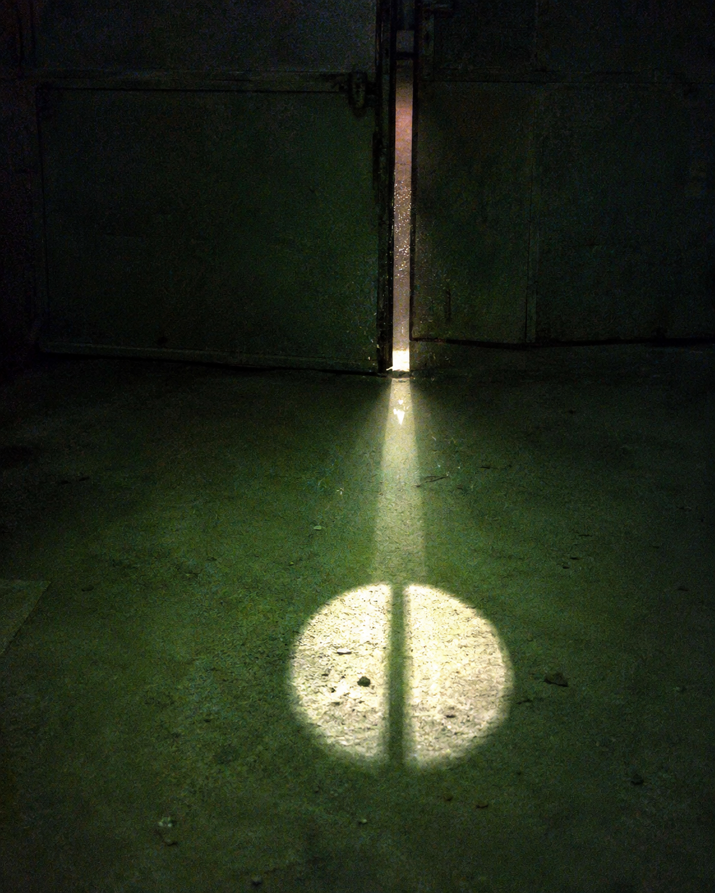

这已经不是我第一次梦游了。但这次不一样——我醒来的时候，手机相册里多了这张照片。
📷 [照片] 东侧铁门 · 拍摄于2026-09-14 03:17
（门缝里透出的光线，形状很奇怪）
（门缝里透出的光线，形状很奇怪）

我查了照片的Exif信息。拍摄时间显示03:17，但我明明应该在睡觉。
更诡异的是，门缝光的形状——它不是自然光。它像是……被刻意塑造成某种图案。
📷 [照片] 门缝光局部放大
（光斑形状：一个圆形，中间有一条竖线）
（光斑形状：一个圆形，中间有一条竖线）
我的室友说，那天晚上我在说梦话。她用手机录了一段。
🎵 [音频] 梦话录音_20260914_0317.wav
（录音中有不属于我的声音）
（录音中有不属于我的声音）
我听了录音。那不是我。是一个我从来没听过的声音，说着什么“03:17”。
📌 补充信息：
我后来发现，门缝光的形状和B2的平面图入口标识完全一致。有人知道B2是什么吗？